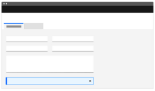
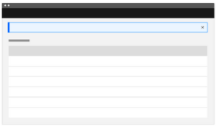
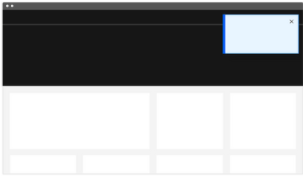
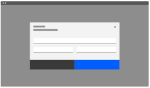

"The number one principle in Jakob Nielsen’s 10 Heuristics of usability is ‘The visibility of System Status’" - NNGroup
The best way to communicate system status varies depending on several key factors:
| SCOPE | PROMPT | TRIGGER BY | INTERUPTIVE | COMPONENT | |
|---|---|---|---|---|---|
| Indicators | Contextual | Passive | User Action, System Event |
No | Badge, Pill |
| Validations | Contextual | Active | User Action | No | Alert |
| Confirmations | Contextual | Active | User Action | No | Modal Dialog |
| Acknowledgement - Action-required | Global, Contextual | Active | System Event | Yes | Modal Dialog |
| Acknowledgement - Alert | Contextual | Passive | System Event | No | Alert |
| Acknowledgement - Passive | Global, Contextual | Passive | System Event | No | Snackbar |
| Empty State | Contextual | Passive ? | System Event | No | Empty State |
| SCOPE | PROMPT | TRIGGER | |
|---|---|---|---|
| Validations | Contextual | Active | User Action |
|
|||
| Indicators | Contextual | Passive | User Action, System Event |
|
|||
| SCOPE | PROMPT | TRIGGER | |
|---|---|---|---|
| Notifications | Global, Contextual |
Passive, Active |
System Event |
|
Passive
Active
|
|||
| SCOPE | PROMPT | TRIGGER | |
|---|---|---|---|
| Validations | Contextual | Active | User Action |
|   | |||
| Indicators | Contextual | Passive | User Action, System Event |
| SCOPE | PROMPT | TRIGGER | |
|---|---|---|---|
| Notifications | Global, Contextual |
Passive, Active |
System Event |
| Passive |  | ||
| Active |  | ||
Rejig above with new table and examples
Break the Notifications (not Indicators or Validation) types of message into 2 types;
There are a number of different UI Components using names and functionality interchangeably. They are generally summarised below;
x
| Component | Urgency | Content | Behavior | 2 dismiss |
|---|---|---|---|---|
| Snackbar | Low | Informational | Transient & dismissable | 0-1 |
| Alert | Medium | Correct a problem; Awareness of state |
Persistent, non-blocking, & dismissable |
1-2 |
| Dialog | High | Require a choice; Acknowledge |
Persistent, blocking (interruptive) |
1-2 |
| Empty State | Medium | Informational | Persistent, blocking | 0-2 |
x
x
x